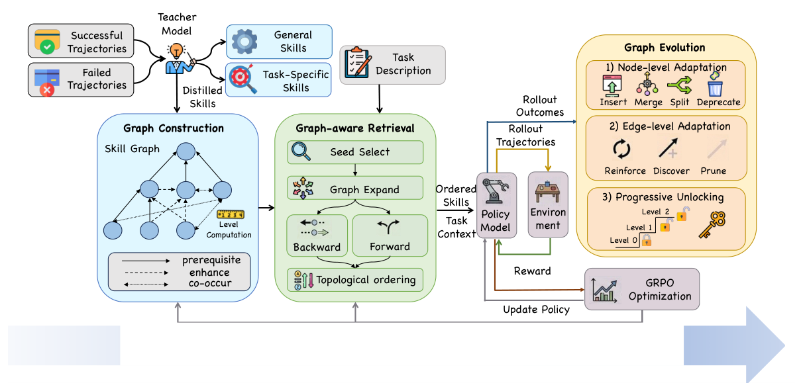
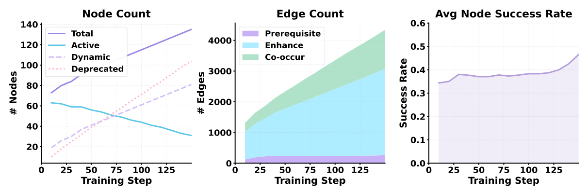
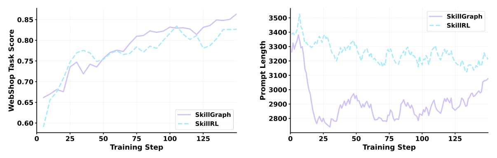

从扁平技能库到演化技能图：SkillGraph 如何重构 Agent 技能复用
SkillGraph: Skill-Augmented Reinforcement Learning for Agents via Evolving Skill Graphs
论文基本信息
文章名字：SkillGraph: Skill-Augmented Reinforcement Learning for Agents via Evolving Skill Graphs
作者与机构：Xiaoyuan Li, Moxin Li, Keqin Bao, Yubo Ma, Wenjie Wang, Dayiheng Liu, Fuli Feng；University of Science and Technology of China、Alibaba Group、National University of Singapore。
期刊与会议：arXiv:2605.12039，NeurIPS 2026 模板预印本；未见正式录用信息。
论文类型：Method / System。
一句话定位：把 LLM Agent 的扁平技能库升级为可检索、可排序、可演化的有向技能图，并与 GRPO 强化学习闭环共训练。
一、完整摘要
现有 LLM Agent 技能库通常把经验存成孤立条目，并依赖语义相似度做 Top-K 检索。这种做法在组合任务上失效：Agent 不仅要知道哪些技能相关，还要知道技能之间谁先谁后、谁增强谁、哪些技能经常共同出现。扁平技能库也缺乏结构信号，难以判断技能何时该合并、拆分或淘汰。
SkillGraph 将可复用技能表示为有向图节点，用 prerequisite、enhance、co-occur 三类边编码依赖、增强与共现关系。面对新任务时，它检索的不是离散技能列表，而是依赖有序的技能子图，用于指导多步决策。训练中，图结构持续从 Agent 轨迹与强化学习反馈中更新，使技能库与策略共同改进。
实验覆盖 ALFWorld、WebShop 和 7 个 search-augmented QA benchmark。结果显示，SkillGraph 相比 memory-augmented RL 方法达到更高性能，尤其在需要组合多个技能的复杂任务上收益明显。
二、知识背景全景
前置概念
Skill Library：把历史轨迹蒸馏成可复用策略单元，供后续任务检索和复用。
Graph-aware Retrieval：检索目标从“相似文本块”变成“依赖有序的技能子图”。
GRPO：通过组内 rollout reward 归一化 advantage 的 policy optimization 方法，减少对 value model 的依赖。
赛道全景
Agent 记忆大致分三路：raw trajectory / summary memory 成本低但噪声高；flat skill bank 可复用但无结构；graph memory 有关系建模但多为静态事实图。SkillGraph 的位置是 skill bank 与 graph memory 的交叉点：把技能关系变成训练过程中的一等对象。
出现契机
LLM Agent 已能产生足够多轨迹，RL for agents 开始可用，复杂任务开始暴露 flat memory 的上限：不是找不到经验，而是经验没有依赖结构。
三、痛点与动机
Top-K 语义检索返回的是 unordered hints。ALFWorld 的“加热并放置”任务需要定位物体、拿起物体、使用加热设备、放到目标位置的硬顺序；WebShop 任务需要查询改写、属性匹配、价格比较的软组合。扁平库只能给相似技能，不能表达执行依赖。
作者的切入点很明确：skill reuse 的核心瓶颈不是 skill extraction，而是 skill organization。显式技能关系能同时服务 retrieval ordering、skill maintenance 和 curriculum unlocking。
四、核心方法

图中蓝色模块是 Graph Construction：从成功轨迹和失败轨迹出发，经 teacher model 蒸馏 general skills 与 task-specific skills，并初始化技能图。绿色模块是 Graph-aware Retrieval：从 seed select 开始，经过 graph expand、backward / forward traversal 与 topological ordering，输出 ordered skills 作为 task context。橙色模块是 Graph Evolution：执行节点级 insert / merge / split / deprecate、边级 reinforce / discover / prune，以及 progressive unlocking。灰色模块是 Policy Model、Environment、GRPO Optimization，构成训练闭环。
1. 图结构定义
技能图记为 G=(V,E)。节点 v 是技能记录，包含 title、principle、applicability condition、category。边 e 带类型和权重 w(e)∈[0,1]。
三类边：prereq 表示 A 必须先于 B；enhance 表示 general skill A 增强 task-specific skill B；co_occur 表示两个技能在成功轨迹中经常共同出现。
(1)phat(v) = nsucc(v)nuse(v)
每个节点维护使用次数、成功次数和经验成功率。这个统计量直接驱动后续的拆分、弃用和解锁。
2. 图感知检索
给定任务描述 d 和任务类型 t(d)，系统先从已解锁技能集合中选择 general skills 与类型匹配技能作为种子。
(2)Rseed = { v ∈ Vactive : category(v) = general ∨ category(v) = t(d) }
Backward expansion 沿 incoming prerequisite edges 做 BFS，深度 D=2，用于找基础依赖。Forward expansion 沿 outgoing edges 做 beam search，beam width B=3，用边权传播候选分数。
(3)σ(v) = maxu∈parents(v) σ(u) · w(u,v)
(4)Rret = TopoSortG(Rseed ∪ RBFS ∪ Rbeam)
最终结果最多保留 Kmax=8 个技能，并按依赖顺序注入 prompt。这里的关键工程价值是：不用改模型结构，只改变上下文组织方式。
3. 图演化
节点级演化负责技能粒度控制：失败覆盖不足则插入新技能；邻域 Jaccard 相似度超过 0.85 的技能合并；高使用但中低成功率的技能拆分；使用频繁但成功率低于 0.15 的技能弃用。
(5)w(e) ← min(w(e) + α, 1.0), for all e ∈ path(τ+)
边级演化负责拓扑更新：成功路径加权强化；新共现关系被发现并加入 co_occur 边；所有边权按 0.99 衰减，低于 0.05 的边被删除。
(6)p(L) = 1|{v: ℓ(v)=L}|v:ℓ(v)=L∑ phat(v) ≥ θunlock
progressive unlocking 只先开放 level-0 技能；当前层平均成功率超过 0.6 后解锁下一层。level 只按 prereq/enhance 计算，co_occur 不参与，避免对称边制造环。
五、实验
实验配置
实验覆盖 ALFWorld 六类 household manipulation、WebShop web navigation、7 个 search-augmented QA benchmark。Base policy 为 Qwen2.5-7B-Instruct，teacher model 为 OpenAI o3。训练使用 cold-start SFT 与 GRPO。Baseline 覆盖闭源 LLM、prompt/memory methods、RL methods、memory-augmented RL methods，以及 QA 检索推理方法。
Table 1. ALFWorld 与 WebShop 主结果
| Method | Pick | Look | Clean | Heat | Cool | Pick2 | All | WebShop Score | WebShop Succ. |
|---|---|---|---|---|---|---|---|---|---|
| Closed-source LLMs | |||||||||
| GPT-4o | 75.3 | 60.8 | 31.2 | 56.7 | 21.6 | 49.8 | 48.0 | 31.8 | 23.7 |
| Gemini-2.5-Pro | 92.8 | 63.3 | 62.1 | 69.0 | 26.6 | 58.7 | 60.3 | 42.5 | 35.9 |
| Prompt-based Agentic or Memory-based Methods | |||||||||
| ReAct | 48.5 | 35.4 | 34.3 | 13.2 | 18.2 | 17.6 | 31.2 | 46.2 | 19.5 |
| Reflexion | 62.0 | 41.6 | 44.9 | 30.9 | 36.3 | 23.8 | 42.7 | 58.1 | 28.8 |
| Mem0 | 54.0 | 55.0 | 26.9 | 36.4 | 20.8 | 7.69 | 33.6 | 23.9 | 2.00 |
| MemP | 54.3 | 38.5 | 48.1 | 56.2 | 32.0 | 16.7 | 41.4 | 25.3 | 6.40 |
| ExpeL | 21.0 | 67.0 | 55.0 | 52.0 | 11.0 | 6.00 | 46.3 | 30.9 | 11.2 |
| SimpleMem | 64.5 | 33.3 | 20.0 | 12.5 | 33.3 | 3.84 | 29.7 | 33.2 | 8.59 |
| RL-based Methods | |||||||||
| RLOO | 87.6 | 78.2 | 87.3 | 81.3 | 71.9 | 48.9 | 75.5 | 80.3 | 65.7 |
| GRPO | 90.8 | 66.1 | 89.3 | 74.7 | 72.5 | 64.7 | 77.6 | 79.3 | 66.1 |
| Memory-Augmented RL-based Methods | |||||||||
| MemRL | 62.8 | 38.5 | 22.2 | 12.5 | 8.00 | 0.00 | 21.4 | 29.5 | 9.20 |
| EvolveR | 64.9 | 33.3 | 46.4 | 13.3 | 33.3 | 33.3 | 43.8 | 42.5 | 17.6 |
| Mem0+GRPO | 78.1 | 54.8 | 56.1 | 31.0 | 65.0 | 26.9 | 54.7 | 58.1 | 37.5 |
| SimpleMem+GRPO | 89.5 | 63.6 | 60.0 | 50.0 | 64.9 | 26.3 | 62.5 | 67.8 | 46.9 |
| SkillRL | 97.9 | 71.4 | 90.0 | 90.0 | 95.5 | 87.5 | 89.9 | 85.2 | 72.7 |
| SkillGraph | 100.0 | 80.0 | 100.0 | 100.0 | 80.0 | 83.3 | 90.6 | 91.5 | 84.4 |
数据解读：SkillGraph 相比 vanilla GRPO 在 ALFWorld 提升 13.0 点，在 WebShop success 提升 18.3 点；相比 SkillRL，ALFWorld 只高 0.7 点，但 WebShop success 高 11.7 点。收益集中在组合导航和技能维护，不是所有任务无差别碾压。原文正文称 ExpeL 在 Heat 上为 56.2，但表格是 52.0；56.2 实际对应 MemP，属于内部数字不一致。
Table 2. Search-augmented QA 结果
| Method | NQ | TriviaQA | PopQA | HotpotQA | 2Wiki | MuSiQue | Bamboogle | Avg. |
|---|---|---|---|---|---|---|---|---|
| Qwen2.5-7B-Instruct | 11.6 | 35.6 | 1.20 | 16.4 | 22.2 | 4.80 | 14.4 | 15.2 |
| CoT | 12.8 | 35.6 | 3.80 | 16.2 | 22.6 | 6.60 | 24.0 | 17.4 |
| RAG | 27.4 | 58.2 | 17.8 | 25.8 | 23.2 | 9.40 | 16.8 | 25.5 |
| Search-o1 | 19.4 | 40.6 | 11.4 | 17.0 | 27.0 | 8.60 | 30.4 | 22.1 |
| Search-R1 | 39.3 | 61.0 | 39.7 | 37.0 | 40.1 | 14.6 | 36.8 | 38.5 |
| ZeroSearch | 43.6 | 61.8 | 51.5 | 34.6 | 35.2 | 18.4 | 27.8 | 39.1 |
| EvolveR | 43.5 | 63.4 | 44.6 | 38.2 | 42.0 | 15.6 | 54.4 | 43.1 |
| SkillRL | 45.9 | 63.3 | 45.9 | 43.2 | 40.3 | 20.2 | 73.8 | 47.1 |
| SkillGraph | 48.0 | 63.8 | 48.5 | 44.7 | 43.4 | 19.5 | 72.6 | 48.9 |
定量分析与局限性评估：SkillGraph 平均 48.9，比 SkillRL 高 1.8 点；在 NQ、TriviaQA、HotpotQA、2Wiki 上领先，但在 MuSiQue 与 Bamboogle 上低于 SkillRL。这说明图结构迁移有效，但不是通用检索推理银弹。原文正文写 NQ 52.9、PopQA 52.6，与表格 48.0、48.5 不一致，应以表格为准。

Table 3. 消融实验
| Method | ALFWorld | WebShop |
|---|---|---|
| SkillGraph | 90.6 | 84.4 |
| w/o Graph Structure | 89.9 | 72.7 |
| w/o Graph-aware Ret. | 59.4 | 79.7 |
| w/o Graph Evolution | 78.2 | 70.3 |
| w/o Cold-Start SFT | 73.4 | 67.2 |
数据解读：ALFWorld 最依赖 graph-aware retrieval，去掉后从 90.6 跌到 59.4；WebShop 最依赖 graph evolution，去掉后从 84.4 跌到 70.3。cold-start SFT 两边都掉 17.2，说明该方法不是即插即用 memory，而是 teacher、SFT、RL、图维护共同构成的系统工程。

Appendix Table 4. 训练超参数
| Hyperparameter | ALFWorld | WebShop | Search QA |
|---|---|---|---|
| Learning rate | 1e-6 | 1e-6 | 1e-6 |
| LR warmup ratio | - | - | 0.1 |
| KL coefficient | 0.01 | 0.01 | 0.001 |
| Train batch size | 16 | 16 | 256 |
| Validation batch size | 64 | 64 | 512 |
| Group size | 8 | 8 | 4 |
| Max prompt length | 4096 | 6000 | 5000 |
| Max response length | 512 | 768 | 700 |
| Total epochs | 200 | 200 | 200 |
| Validation frequency | 5 | 5 | 5 |
数据解读：Search QA 的 batch 明显更大，KL 更小，说明三个环境并非完全同构设置。WebShop 的 max prompt length 为 6000，也解释了论文为何强调 context efficiency：上下文成本是实际瓶颈。
Appendix Table 5. SkillGraph 超参数
| Hyperparameter | Symbol | Value |
|---|---|---|
| Retrieved skill cap | Kmax | 8 |
| Backward BFS depth | D | 2 |
| Forward beam width | B | 3 |
| Max new skills per update | m | 3 |
| Merge threshold | Jaccard | 0.85 |
| Deprecation threshold | - | 0.15 |
| Path reinforcement step | alpha | 0.05 |
| Edge decay factor | gamma | 0.99 |
| Edge pruning threshold | wmin | 0.05 |
| Level unlock threshold | theta | 0.6 |
数据解读：检索上限 Kmax=8 很克制，说明作者确实在控制 prompt 噪声。图演化阈值多为手工超参，论文没有充分证明这些阈值跨环境稳健，这是落地时需要重新调参的部分。
Appendix Table 6. SkillGraph 置信区间
| Benchmark | Metric | SkillGraph |
|---|---|---|
| ALFWorld | Overall Succ. | 90.6 ± 7.1 |
| WebShop | Task Score | 91.5 ± 6.8 |
| WebShop | Success Rate | 84.4 ± 8.9 |
| NQ | EM | 48.0 ± 4.4 |
| TriviaQA | EM | 63.8 ± 4.2 |
| PopQA | EM | 48.5 ± 4.4 |
| HotpotQA | EM | 44.7 ± 4.4 |
| 2Wiki | EM | 43.4 ± 4.3 |
| MuSiQue | EM | 19.5 ± 3.5 |
| Bamboogle | EM | 72.6 ± 3.9 |
| Average QA | EM | 48.9 ± 4.4 |
数据解读：WebShop success 的 95% 区间为 ±8.9，波动不小；ALFWorld 为 ±7.1。论文主表优势明显，但置信区间提示在小样本或高方差环境中仍需多 seed 复验。
Appendix Table 7. Search QA 训练曲线
| Step | NQ | TriviaQA | PopQA | HotpotQA | 2Wiki | MuSiQue | Bamboogle | Avg. |
|---|---|---|---|---|---|---|---|---|
| 30 | 39.2 | 58.9 | 40.6 | 39.7 | 35.4 | 16.3 | 69.0 | 42.4 |
| 60 | 44.9 | 61.8 | 44.1 | 42.4 | 39.1 | 17.6 | 69.8 | 45.3 |
| 90 | 46.0 | 62.1 | 45.6 | 42.8 | 40.0 | 18.1 | 68.1 | 46.4 |
| 120 | 46.2 | 62.5 | 45.1 | 43.6 | 41.9 | 18.4 | 70.6 | 46.9 |
| 150 | 46.4 | 63.6 | 45.6 | 44.3 | 43.3 | 19.4 | 70.6 | 47.9 |
| 200 | 48.0 | 63.8 | 48.5 | 44.7 | 43.4 | 19.5 | 72.6 | 48.9 |
数据解读：平均分从 step 30 的 42.4 增至 step 200 的 48.9，趋势稳定但增幅逐渐收敛。NQ 与 HotpotQA 是 in-domain，仍只达到 48.0 和 44.7，说明 search QA 的瓶颈不只在技能组织，还受检索质量、答案抽取和多跳证据链约束。
六、极客评分
创新性：7.0/10。图化 skill bank、dependency-ordered retrieval、evolution loop 是扎实系统创新；但底层模块多来自已有路线，核心是闭环集成，不是新学习理论。
实用性：6.0/10。思路适合复杂 Agent，但落地成本高：强 teacher、轨迹采集、SFT、GRPO、图维护、验证反馈一个都不少。对普通本地轻量 Agent 不够友好。
行业价值：7.0/10。对 Web agent、embodied agent、搜索型 QA agent 有明确价值，尤其适合多步骤 SOP 与长期技能积累；短板是跨环境迁移尚未实证，且原文内部数字不一致降低可信度。
七、通俗讲解：SkillGraph 到底在干什么
下面用大白话 + 大量类比，从头到尾讲一遍。重点在方法论。配图来自论文原图（Figure 1/2/3）。
一句话概括：让 AI agent 像人一样，把自己解题的经验整理成一张"技能关系图"，而不是一堆散乱的笔记。这样下次遇到复杂任务时，它不仅知道"该用哪些技能"，还知道"按什么顺序用、哪个是哪个的前提"。
1. 先理解背景：什么是"技能库"
想象 agent 在 ALFWorld（模拟家居任务）里反复做任务。"加热一个杯子"需要：找杯子 → 拿起 → 放进微波炉 → 启动 → 拿出来。每次都从零摸索太傻了，所以 agent 会把反复出现的解题模式蒸馏成"技能"存起来，下次直接复用。这就是"技能库"。
现有技能库的两个死穴
死穴 1：检索没有"组合性"。现有技能库像一个没有目录、没有顺序的杂物箱。你问它"怎么加热杯子"，它捞出一堆技能——[拿起物品] [微波炉操作] [找杯子] [启动电器]——但不告诉你先做哪个、后做哪个。复杂任务需要有序的技能链，扁平检索返回一堆，agent 不知道执行顺序。
死穴 2：维护没有"结构信号"。技能库越攒越多，会出现：两个技能其实说同一件事（该合并）、一个技能太笼统（该拆细）、一个技能老不管用（该淘汰）。但现有系统没有信号告诉你"这俩该合并"——因为技能之间没有关系结构，全是孤立的。
论文的核心思路：把扁平技能库升级成一张"技能关系图"。技能是节点，技能之间的关系（谁是谁的前提、谁增强谁、谁常和谁一起出现）是带类型的边。这样检索能沿图走出有顺序的技能链，维护也有结构信号（重复的合并、太宽的拆、失败的淘汰）。
2. 方法论（重点讲解）
整个方法是一个闭环，三阶段循环。下图（论文 Figure 1）是总览——左边轨迹输入，中部建图，右下检索，右上演化，最下方闭环回环。
图 1｜SkillGraph 三阶段闭环架构总览
① 图构建：从轨迹蒸馏技能 + 建图
蒸馏技能（从哪来）。先让基础 agent 跑一堆任务，收集成功/失败轨迹。然后"老师模型"（teacher LLM）看这些轨迹，蒸馏出两类技能：
| 类型 | 是什么 | 例子 |
|---|---|---|
| 通用技能 | 跨任务都适用的推理策略 | "做完每个子目标前先验证一下" |
| 任务技能 | 针对特定任务类型的策略 | "加热前检查微波炉里有没有东西" |
每个技能是一个小卡片，含四个字段：标题、核心原理（怎么做）、适用条件（什么情况用）、类别标签（general 还是 task-specific）。
建图（三类边）。技能是节点，关键在三类带类型的边：
边 1 — prerequisite（前置）A→B："A 必须在 B 之前完成"。例：[找杯子]→[拿起杯子]（不先找到，怎么拿起？）
边 2 — enhance（增强）A→B："通用技能 A 能让任务技能 B 效果更好"。例：[先验证子目标](通用)→[微波炉操作](任务)
边 3 — co-occur（共现）A↔B："A 和 B 经常在成功任务里一起出现"。例：[找杯子]↔[打开柜子]
每条边带权重 w∈[0,1]（关系多强，训练中动态调）。每个节点还维护三个统计量——被用几次（n_use）、成功几次（n_succ）、成功率 p̂=n_succ/n_use。还有拓扑层级 ℓ(v)（辈分）：level 0 没前提（最基础），level 1 依赖 level 0，依此类推。
② 图感知检索（最有价值的部分）
消融实验证明这是贡献最大的环节（去掉它，性能从 90.6 暴跌到 59.4）。扁平检索返回一堆没顺序，图感知检索要解决：沿图走，产出有依赖顺序的技能链。三步走：
第 1 步：选种子。从"已解锁的技能集"里，选所有通用技能 + 和当前任务类型匹配的任务技能作为"种子节点"。类比：先确定"这次任务大概涉及哪几个工种"。
第 2 步：双向扩展。从种子出发往两个方向找更多技能：向后（沿 prerequisite 边 BFS 往回走，找回基础前置——类比：你要做菜，往回找发现得先"切菜""点火"）；向前（沿出向边 beam search 往前走，打分 σ(v)=max_父 σ(父)·w(父,v)——类比：从"切菜"往前发现常跟着"炒菜""调味"，带上）。
第 3 步：拓扑排序。把种子 + 向后 + 向前的所有技能按依赖关系做拓扑排序，输出一条有序技能链：[找杯子]→[打开柜子]→[拿起]→[放微波炉]→[启动]→[取出]。从简单到复杂，符合子任务组合顺序。封顶 K_max 个注入 agent prompt。整个过程零 LLM 调用（纯图遍历），快且省钱。
关键特点：整个检索零 LLM 调用（纯图遍历），所以很快、很省钱。这是相对扁平向量检索的效率优势。
③ 图演化（让图越来越聪明）
静态的图跟不上越来越强的 agent。所以每次验证时，根据训练反馈动态调整图——分节点级和边级。
节点级：4 个操作（每个都有明确触发条件）
Insert（插入）：agent 在现有技能覆盖不了的任务上失败时，老师模型分析失败轨迹，提至多 m 个新技能补上。类比：发现"煎蛋"没人会，赶紧总结一条写进去。
Merge（合并）：两个技能邻居高度重合（Jaccard≥τ_merge），说明干同一件事，合成一个。类比："开冰箱"和"打开冷柜"其实是一回事。
Split（拆分）：成功率在 0.15-0.4 且被用≥10 次 → 说明太笼统，混了好几种情况。拆成几个聚焦的子技能。类比："用电器"成功率 0.3（时灵时不灵），拆成"用微波炉""用冰箱"。
Deprecate（淘汰）：被用≥20 次但成功率<0.15 → 几乎没用，从未来检索剔除。类比："拍一拍电器让它工作"成功率 0.05，淘汰。
边级：3 个操作
Path reinforcement（路径强化）：成功轨迹走过的技能链，那条路径上每条边权重加 α（封顶 1.0）。类比：成功用"找杯子→拿→加热"解决一次，下次更可能再走这条。
Co-occurrence discovery（发现新共现）：两个技能在成功任务里一起出现但还没连边，加一条 co-occur 边。
Decay & pruning（衰减剪枝）：所有边权重每次乘衰减因子 γ（<1）。掉到 w_min 以下的边剪掉。类比：很久没用到的边慢慢变弱消失，防止图臃肿。
Progressive Unlocking（渐进解锁，课程学习）。不一开始就把所有技能给 agent。一开始只解锁 level 0（最基础）。只有当 level L 的技能平均成功率≥θ_unlock 时，才解锁 level L+1。类比：学数学，先把加减法练熟，再学乘除，不会一上来就扔微积分。为什么这么设计？因为 agent 连基础技能都没掌握就给它高阶技能，会乱用、学坏。
下图（论文 Figure 2）展示训练过程中图的演化动态——左图节点数（总数/活跃/插入/淘汰），中图各类边数，右图平均成功率稳步上升。
图 2｜训练过程中节点、边、成功率的演化动态
④ 闭环训练（policy + 图协同进化）
用 GRPO（一种强化学习算法）训练 agent：给任务 + 技能链 → agent 跑一组 rollout → 按成功/失败打分 → GRPO 更新 agent 权重（让它更会用技能）→ 更强的 agent 产出更好的轨迹 → 反过来驱动图演化。这就是"协同进化"：图变好→给 agent 更好指导→agent 变强→更好的轨迹优化图。
下图（论文 Figure 3）对比 SkillGraph 和前作 SkillRL：左图任务得分收敛更快更高，右图 prompt 长度（上下文效率）更优。
图 3｜训练动态（左 任务得分）与上下文效率（右 prompt 长度）对比
3. 实验里最该记住的
主结果：7B 小模型 + 技能图，反超 GPT-4o 42.6 分（ALFWorld 90.6 vs 48.0）。证明结构化技能推理能弥补模型规模差距。
消融的两个反直觉发现：
① 图感知检索是命脉：去掉它，ALFWorld 从 90.6 暴跌到 59.4（−31.2 分）。真正起作用的是"依赖感知的有序检索"。
② 图结构本身只贡献 0.7 分：去掉图结构（退化为扁平库）只掉 0.7 分！这说明"图"这个壳子不重要，重要的是"用图来做有序检索"这个动作。如果有人能用更轻的方式实现有序检索，图的必要性就被削弱。
4. 强在哪、弱在哪
| 强点 | 弱点 |
|---|---|
| 显式建模技能关系，依赖感知检索在组合性任务上确实强 | 依赖 RL 训练（GRPO 改权重），无法即插即用 |
| 演化机制有明确阈值（Insert/Merge/Split/Deprecate 都有数学条件） | 节点只有 general/task 二分，无"条件/失败/证据"语义节点 |
| Progressive Unlocking 课程学习很聪明 | 没有冲突处理——三类边全是正向/协同，无法表达互斥 |
| 检索零 LLM 调用，工程省成本 | Deprecate 会丢弃低频技能（成功率<0.15 淘汰），有些可能只是没找到适用条件 |
5. 对你研究的意义（为什么你要读这篇）
这是你必须正面交锋的最近竞品。它撞你方案的 4 个子层（结构/检索/演化/建图），但你的方案在 5 个维度不同：
| 维度 | SkillGraph | 你的方案 |
|---|---|---|
| 几何 | 平面图 | 双曲空间（几何承载关系） |
| 节点 | general/task 二分 | 6 类 procedural 语义节点 |
| 检索 | 程序化拓扑排序 | agent 自主多跳 |
| 演化信号 | RL task reward | metric_delta 客观验证 |
| 训练范式 | RL（改权重） | context 注入（不改权重，即插即用） |
| 冲突 | 无 | prevents 几何对跖 |
最大的实验风险：你的"agent 自主检索"必须能跑赢它的"程序化拓扑排序"——否则你的核心差异点不成立。这是你必跑的 P0 实验。